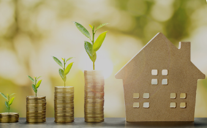

TIPS TO SAVE MONEY
“The habit of saving is itself an education; it fosters every virtue, teaches self-denial, cultivates the sense of order, trains to forethought, and so broadens the mind.” – T.T. Munger
Saving Money
Saving money might sound intimidating and out of control. You're right, you have to make money first to save money. But all of us here are making money; the source and amount differ. For a student, you get money from the parents/ gaurdians, from local sponsors and scholarship, from education financing loans and so. For working age, you get money from salary or wages, family or personal investment and so on. For elderly, you get money from pension, investments, familiy support and so on. The fact that you are reading this article, you have some sort of income. True or false?
Is money the root of all evils? money is just a tool. It is not bad or good. It is how you use it, just like a knife in your kitchen. Which you can use for good, like cutting groceries or use it a wrong way, hurting someone with.
Money is some source of problems for most of the people causing stress and sleepless night. Of course it is human nature to "want something for nothing or look for the easiest and quickest way to what they want". Thus, we all dream of winning the lottery. No more worrying about the bills to be paid and being able to buy anything you want. But no matter how many times you enter a lottery, the chances are a lot higher that you will lose a lot of money on it than you will be a millionaire one day.
Money problems often arise because we want more than we can afford. For some, a good meal is more than you can afford. For others, a new mobile phone or car is something you can’t afford. There is a great temptation to make use of loans or credits without carefully considering the long-term consequences. After all, the loan must be repaid, with interest. The easier it is to get a loan, the higher the interest rate.
Reasons for Saving Money
Today, I would love us to talk about savings. There are plenty of reasons for savings. Lets look at a few before we discuss how to save.
- It helps in emergencies/ unexpected expenses - Emergencies are always unexpected. Therefore, when they occur, the funds required are usually not part of your regular budget. There is often pressure to look for extra funds at a very short notice such as funeral expenses, house repairs and even car repairs. Accumulated savings can often go a long way in alleviating these emergency situations.
- Reduce stress - It’s never fun to calculate whether you can afford a bill, say yes to extracurricular activities for your kids or join friends for dinner. But if you don’t have savings, you might find yourself trying to figure out if you can pay for expenses more than you care to admit. Savings can reduce your stress and allow you to enjoy life more.
- Expanding options - Generally, the more money you have saved, the more control you can have over your life and your financial security. If you’re unhappy with where you live, for instance, having some savings can open up the possibility of moving to a more desirable location or putting a downpayment on a new home. If you dislike your job, having a cushion of savings might afford you the option of leaving that job even before you have another one lined up. Money certainly does not solve all problems, but having savings can give you a little bit of breathing room and allow you to take positive steps in your life.
- Having financial freedom - Another benefit of savings is that you are on a program that can give you financial freedom. If you stick to a plan of stashing 10% or 20% into savings, as many financial experts recommend, you can avoid always living paycheck to paycheck and have more financial freedom. For example, with adequate savings, you might be able to take a sabbatical from work and pursue a passion project. You might have enough cash to start your own business or retire early. Or you might plan a luxe anniversary celebration somewhere tropical. Savings can enable your dreams.
- Meet life goals - Let’s face it, many of our life goals aren’t
free. Anything from pursuing higher education to buying a home or a dream car requires a certain
amount of funding, which you’ll need to plan ahead for.
If you have future goals — a big vacation, a child’s education, upgrading your home or vehicle — it can be important to begin saving now so you have the funds available when you are ready to achieve those goals.
The sooner you start saving for your goals, the more likely you’ll achieve them faster. It’s important to list your various goals and develop savings strategies for both short-term goals (such as a vacation or down payment on a house) and long-term goals (such as opening a business or retirement).
- Avoiding bad debt - Debt free living means that you are not paying interest on debt, which will save you a lot of money over time. Also, debt-free living provides more of a better financial future, reduces stress, and allows you to enjoy life more. Living without debt gives you a cushion in case of an emergency. If you have debt, you’re more likely going to have to use your savings to pay off the debt. This can result in a difficult financial situation. Having savings gives you a safety net to fall back on in case of an unexpected event.
- Better retirement - Saving money for retirement is important because it allows you to have a comfortable life after you retire. It also gives you peace of mind knowing that you have money set aside for your future and that it is possible to retire earlier depending on how well you’ve managed to save.
- Leave legacy for loved ones - Leaving a legacy allows you to leave something behind for your loved ones or a cause close to your heart, such as a chosen charity after you're gone. It also gives you a sense of security knowing that your loved ones have something to fall back on if something happens to you. Legacy planning gives a sense of peace of mind, and it’s also a great motivator to save.
- Job loss or injury - If you lose your job or become injured, you may have to rely on your savings to cover your living expenses. If you have an injury, you may need to have savings to cover your medical expenses and lost income. Having savings helps you weather a temporary difficult situation and avoid going into debt.
- Earn interest - Savings accounts come with interest, which is the bank’s way of thanking you for keeping your money with them, where they can use it until you withdraw it. That can help your savings along. If you have kes. 500,000 in a savings account with a 4.00% annual percentage yield (APY) earning compound interest monthly, that would give you an extra kes. 20,400 at the end of the year. Add kes 2,000 per month to the account and let it sit for five years, and you’ll have kes. 743,100. Nice! That’s cash in your account for doing absolutely nothing. Now, increase this percentage to 8.50%, KCB's goal saving account returns. Amazing!
- Reduced tax liability - When you save money in a retirement plan or insurance plans, you get different tax advantages, depending on the plan. With a elimisha plan, for example, you can reduce your taxable income by making savings contributions to the tax-deductible plan.
- Giving back - Another reason why saving money is important is it can enable you to give back to others. When you have a cash cushion and aren’t living paycheck to paycheck, you have the opportunity to help those around you. That might involve sending a few hundred dollars to a relative who has a big dental bill and is struggling to pay it. Or you might donate to a medical research cause, a disaster fund, or a local after-school program that you love. The choice is yours, but having a healthy savings account can make it possible.
Get Started with Savings
If you’re convinced that saving is the right move, how do you actually do it? The key is to make a budget and make sticking to it easy. This doesn’t have to be intimidating. The key is to get familiar with what you spend, what you earn, and what your goals are. Here are some steps you could take to help get started.
-
Figure out what you are saving for - Is it a long-term
goal, like retirement or your kids’ college tuition? A short-term goal, like an emergency
fund? Or a medium-term goal, like a wedding or home renovation? It can help to get a sense
of how much you need to stash away and by when.
-
The point of this is two fold:
- First, you can divide the amount you need by the months left until your deadline to get a clear picture of how much you’ll need to save each month.
- Second, you will know where to put your money. If your goal is less than a couple of years away, you may want to keep your savings in an online savings account, a certificate of deposit (CD), or money market account.
These options can help you earn more interest than a standard savings account but still allow you to access your money when you need it.
If your goal is in the distant future, you might want to invest the money in a retirement account, 529 college savings plan, or brokerage account so that it has the chance to grow over time.
- Stick to your budget - You don’t really know where your
money is going unless you track it. That’s why for a month or two, you may want to take note
of all your daily and monthly expenses.
Next, you’ll want to tally up your net monthly income, meaning what goes into your account after the different types of taxes and deductions are taken out.
The difference between your monthly income and your expenses (everything from rent to student loan payments to food and dining out) is what you have left over to save. If there’s not enough left over, you can work on finding ways to cut spending or increase your income. You might try following the 50/30/20 budget rule to help guide your spending and saving.
- Auto-save - If you’re manually putting cash away every
month, it can be easy to fall behind.
For one thing, you may forget to move money into savings regularly amid your busy schedule.
And, unless you protect the money in advance by transferring it to a different account, you
may accidentally spend it.
One way to avoid this is to set up automated savings through your bank account or retirement plan. If you’re putting away the amount you identified you need for your goal, you may get there without even thinking about it.
Common Places to Save Money
These are the possible options you may consider as you look for the right place to save your money;
- Savings account - You could put your money in a savings account at a financial institution, like your local bank branch. However, as outlined above, you may not earn the highest possible interest.
- Online savings account or high-yield savings account - These accounts are likely to pay a much higher interest rate than a conventional savings account while offering the same convenience and security as a traditional savings account.
- Fixed deposit - gives you a specific rate of interest but you must agree to keep your money in the account (that is, not withdrawing any of it) for a specific term, whether months or years. Withdrawing earlier could trigger penalties.
- Investments - There are many options here, such as MMF, Treasury bills and bonds. These can earn healthy returns and are typically considered safe places to keep money.
- Insurance - There are insurance policies which also involves savings over a specified period of time.
Conclusion
Saving money saves live. It is about building the culture of savings rather than the amount. You have the current expenses and bills. But look for and strike a balance. Put a standing order on your account that automatically send some amount to your savings account. It will save you on big date. Allow me to conclude with the sayings from P.T. Barnum, "A penny here and a dollar there, placed at interest, goes on accumulating, and in this way, the desired result is attained. It requires some training, perhaps, to accomplish this economy, but when once used to it, you will find there is more satisfaction in rational saving than in irrational spending." Thank you for reading!
About the Author
Galm Dida - Credit and Investment Coach (KCB - Isiolo) - I am passionate of financial independence for youth and women in marginalized regions. Currently supporting over 15 women and youth groups around Isiolo in the matters of savings and investment. Join us as we inspire the community in financial success.
Contact
Tell: 0741370493 || email: Send me an email || whatsapp: WhatsApp Me
Quick links